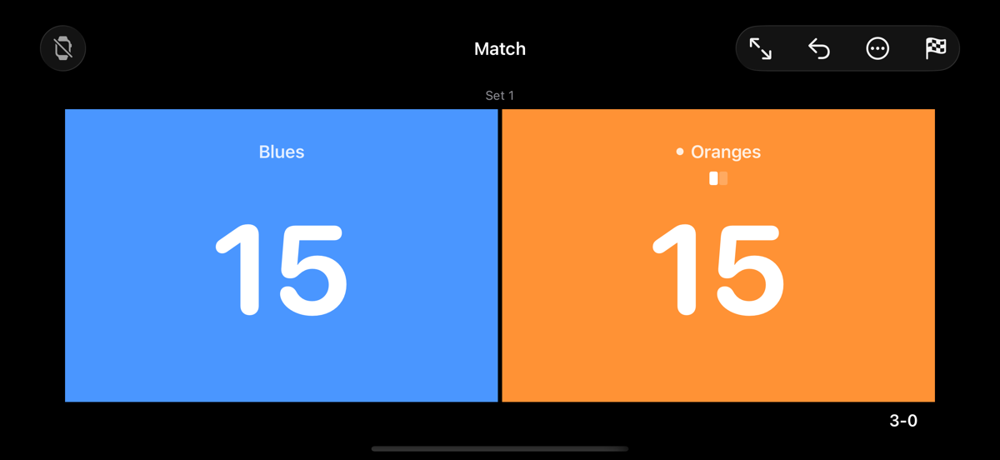
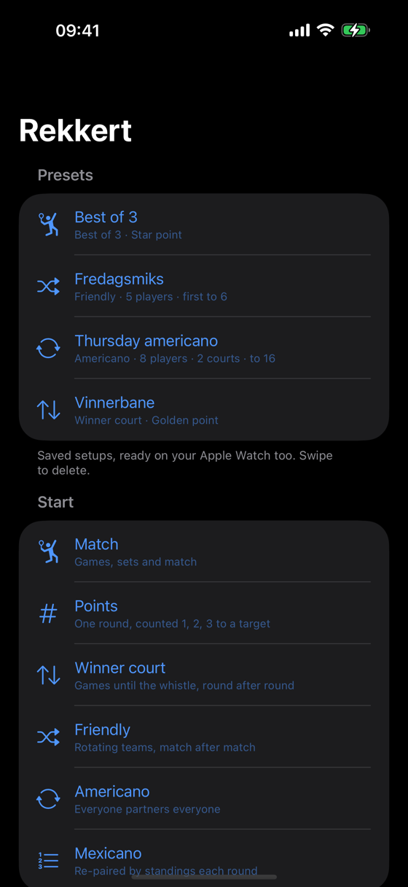
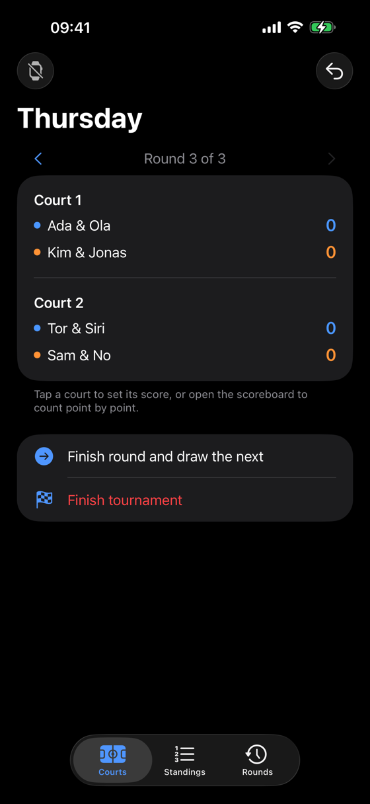
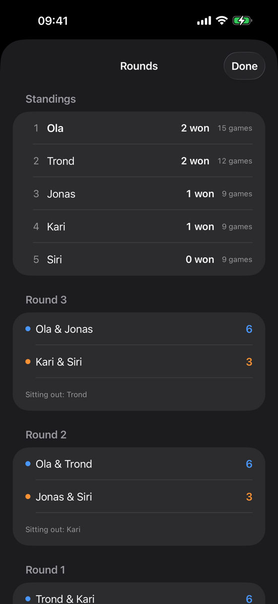
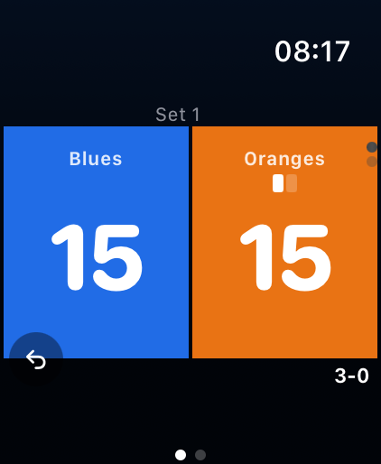
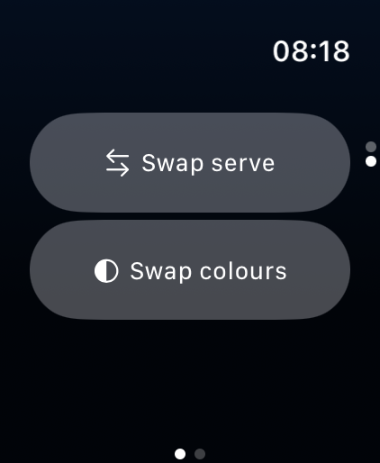
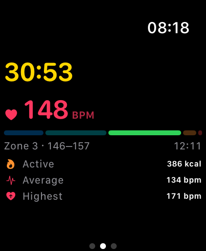

Rekkert
Padel and tennis scoring for iPhone and Apple Watch.

What it does
- Every format you play. Games, sets and match; points counted to a target; winner court, round after round; a friendly with the partnerships redrawn after every match; americano and mexicano tournaments across several courts.
- Score from your wrist. The Apple Watch app is the whole scoreboard, not a remote — tap the point on whichever device is nearer.
- Share the match. Read out a short code and everyone at the court follows the same score on their own phone. It goes straight between the phones on the local network, with no account and no server.
- It calls the score. Hands full with a racket — let the phone say it out loud.
- Made for the side of a court. Full screen fills the display with the two numbers, turns the brightness up and keeps the screen awake, and blacks the colours out for bright sun. The board times the round, and every device counts from the same moment.
- Saved setups. Name a setup when you start it and it keeps, players and all — on the watch too, so the Thursday americano starts from your wrist.
- It remembers. Past matches and tournaments are kept, with the players, so next Thursday is one tap away.
- It counts as a workout. Press Start workout, on the watch or the phone, and the session goes into Apple Health as tennis, with the matches you played during it listed under it. Never on its own: starting a match does not start a workout, and nothing is recorded until you press the button.






Questions, bugs, or something you wish it did?